KHAI BÁO DANH SÁCH CONTAINER TỜ KHAI
Bắt đầu từ ngày 01/04/2015 cơ quan Hải quan áp dụng hình thức mới trong khai báo hàng hóa Container mã vạch và hàng rời, nội dung cụ thể như sau :
- Tờ khai nhập luồng Vàng/ Đỏ được phép khai bổ sung, sửa đổi danh sách container đến trước khi tờ khai được chấp nhận thông quan/ giải phóng hàng/ mang hàng về bảo quản/ chuyển địa điểm kiểm tra. Đối với tờ khai luồng Xanh có thể khai bổ sung, sửa đổi tại mọi thời điểm đến trước khi đã xác nhận qua khu vực giám sát.
- Không khai bổ sung danh sách container đối với tờ khai xuất, doanh nghiệp khai danh sách container kèm theo tờ khai tại tab "Thông tin Container".
- Bổ sung chức năng lấy danh sách mã vạch hàng rời đủ điều kiện qua khu vực giám sát.
Sau khi tờ khai đã được khai báo, nếu có danh sách container kèm theo doanh nghiệp cần tiến hành khai báo bổ sung bằng cách vào menu “Tờ khai xuất nhập khẩu / Khai báo bổ sung” chọn mục “Khai báo danh sách container cho tờ khai”:
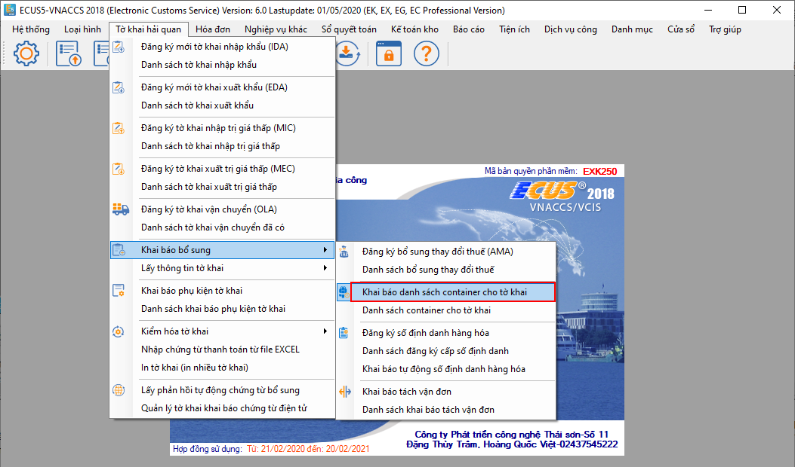
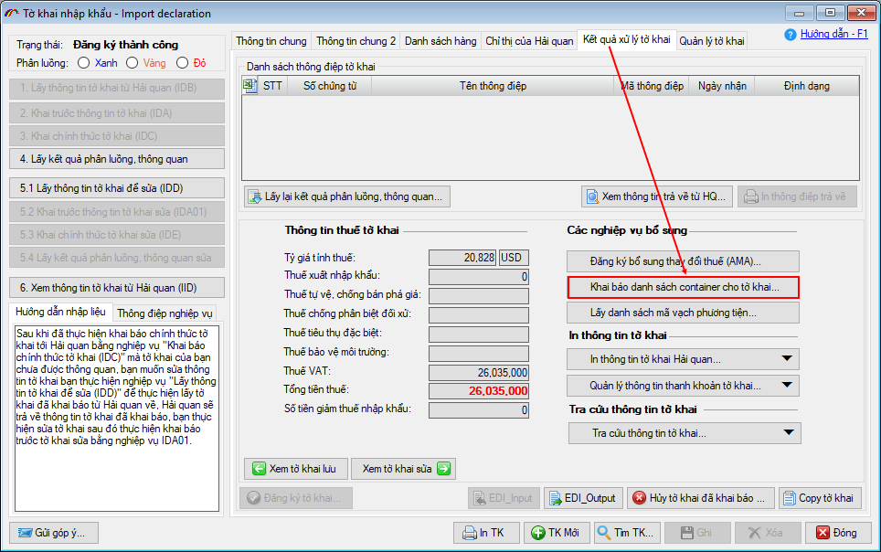
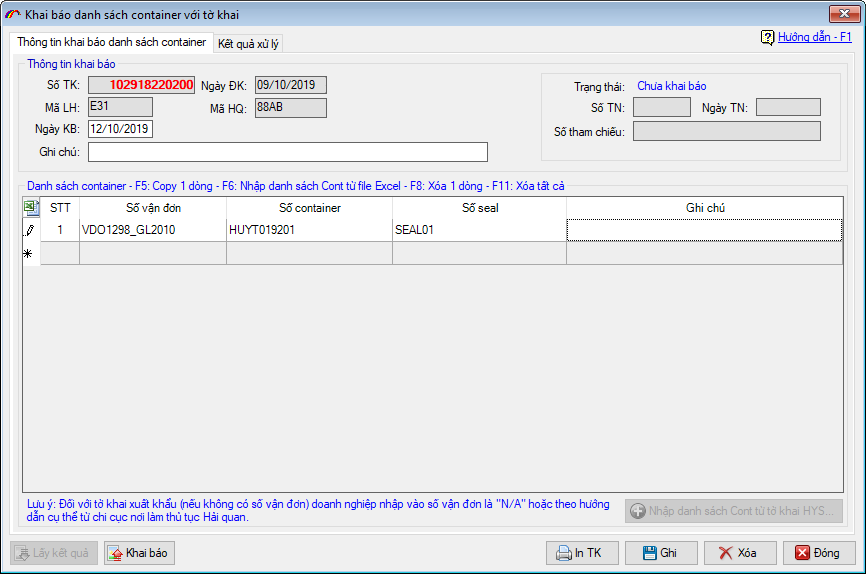
Khi tờ khai đã được khai báo bổ sung danh sách container ở bước trên đồng thời đã làm xong thủ tục thông quan ( đối với tờ khai luồng Vàng, Đỏ) hoặc đã được chấp nhận thông quan, doanh nghiệp tiến hành lấy danh sách container qua khu vực giám sát của tờ khai bằng cách vào menu “Tờ khai xuất nhập khẩu / Lấy thông tin tờ khai” và chọn “Lấy danh sách container qua khu vực giám sát” :
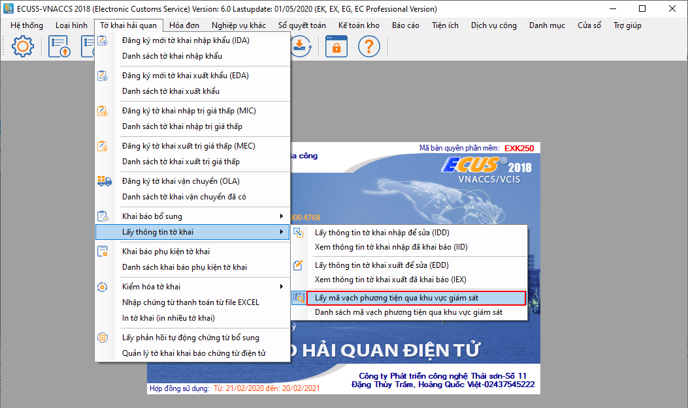
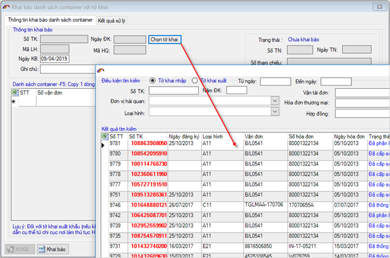
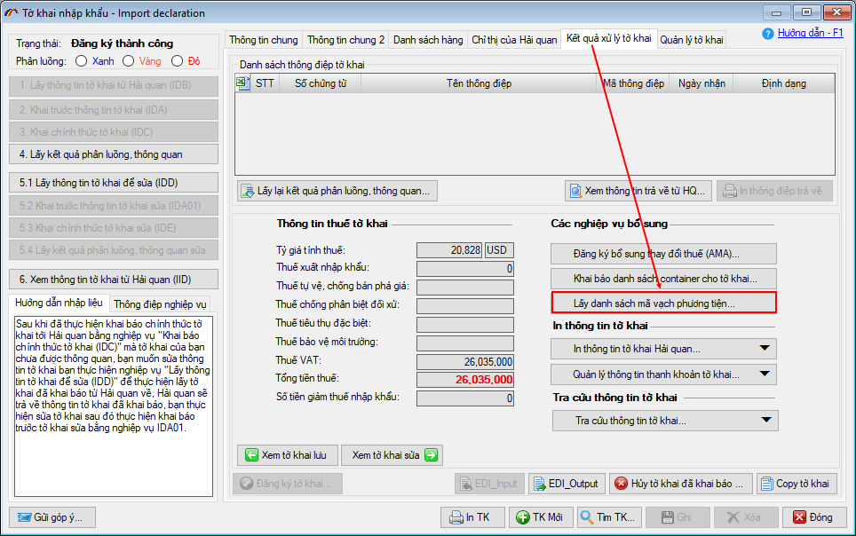
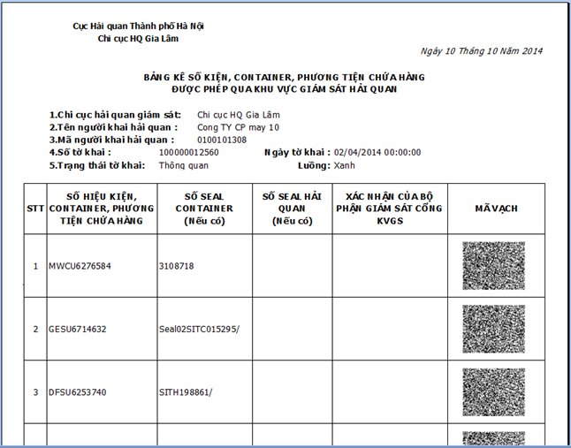
Lưu ý :
- Để áp dụng cách thức đọc danh sách container mã vạch doanh nghiệp bắt buộc phải khai báo bổ sung danh sách container cho tờ khai, áp dụng cả đối với tờ khai nhập và tờ khai xuất. Các hình thức khai đính kèm HYS hoặc khai e-manifest, khai kèm tờ khai đều chưa có hiệu lực.
- Danh sách container chỉ được trả về sau khi tờ khai đã hoàn thành thủ tục, chấp nhận thông quan.
- Khi danh sách container đã được xử lý qua khu vực giám sát (đã được cán bộ giám sát tiến hành xác nhận qua khu vực giám sát) thì phía doanh nghiệp không thể lấy thông tin danh sách này nữa.
- Đối với tờ khai luồng Vàng / Đỏ đã được cấp phép qua khu vực giám sát thì không thể thực hiện khai bổ sung, sửa đổi danh sách container.
- Trường hợp không đủ điều kiện để khai bổ sung danh sách container cho tờ khai, doanh nghiệp liên hệ trực tiếp với cán bộ Hải quan Khu vực giám sát để được nhập danh sách container vào hệ thống.
Theo quy định mới của Tổng cục Hải quan, từ ngày 01/04/2015 hệ thống không tiếp nhận bổ sung danh sách container, doanh nghiệp phải khai báo danh sách container kèm theo tờ khai xuất nếu có tại tab “Container” trên tờ khai. Hình thức khai danh sách container bằng nghiệp vụ khai đính kèm HYS, e-Manifest đều không có không có hiệu lực thay thế.
Trường hợp khi khai báo tờ khai doanh nghiệp không khai kèm danh sách container thì phải liên hệ trực tiếp cán bộ hải quan khu vực giám sát để được cập nhật danh sách container vào hệ thống. Sau đây là các bước hướng dẫn thực hiện:
Để khai báo danh sách container kèm cho tờ khai xuất khẩu, trên tờ khai xuất bạn chọn tab “Thông tin Container”:
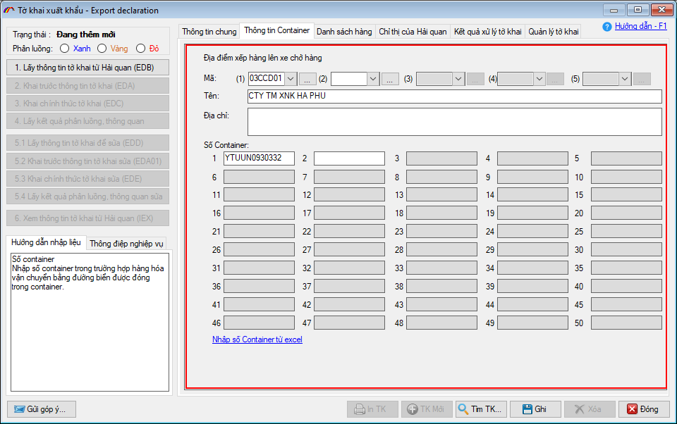
Sau khi tờ khai được cấp phép qua khu vực giám sát, bạn chuyển sang tab “Kết quả xử lý tờ khai” và chọn “Lấy danh sách container của tờ khai” màn hình hiện ra như sau :
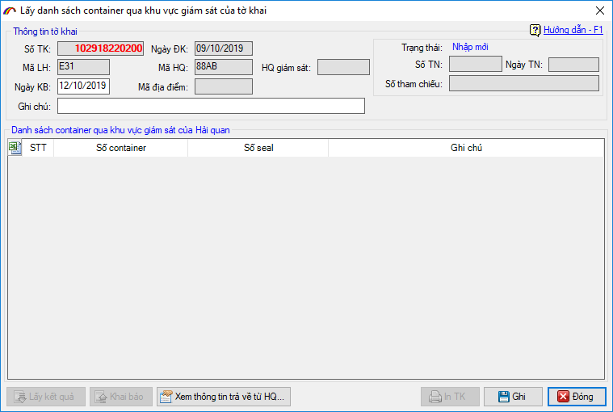
Sau khi có thông báo chấp nhận được trả về danh sách container qua khu vực giám sát của tờ khai, doanh nghiệp tiến hành nhấn vào “In TK” để được danh sách container có mã vạch:
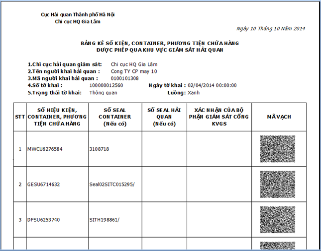

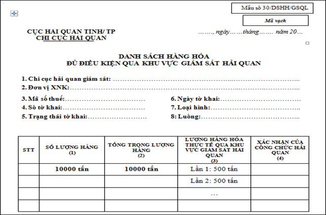